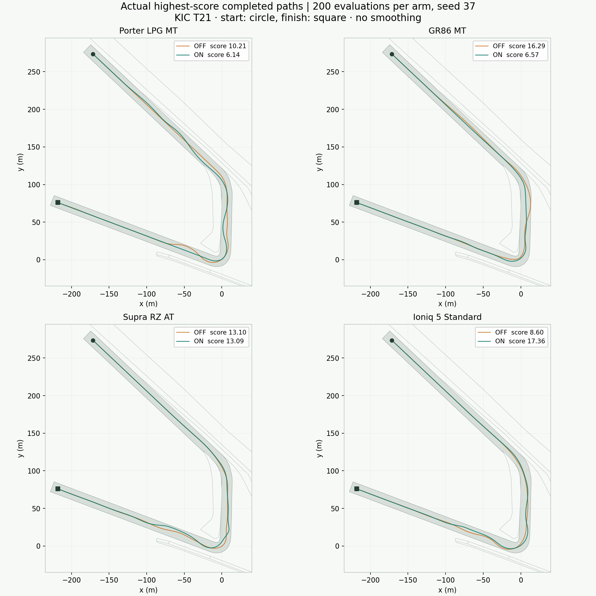
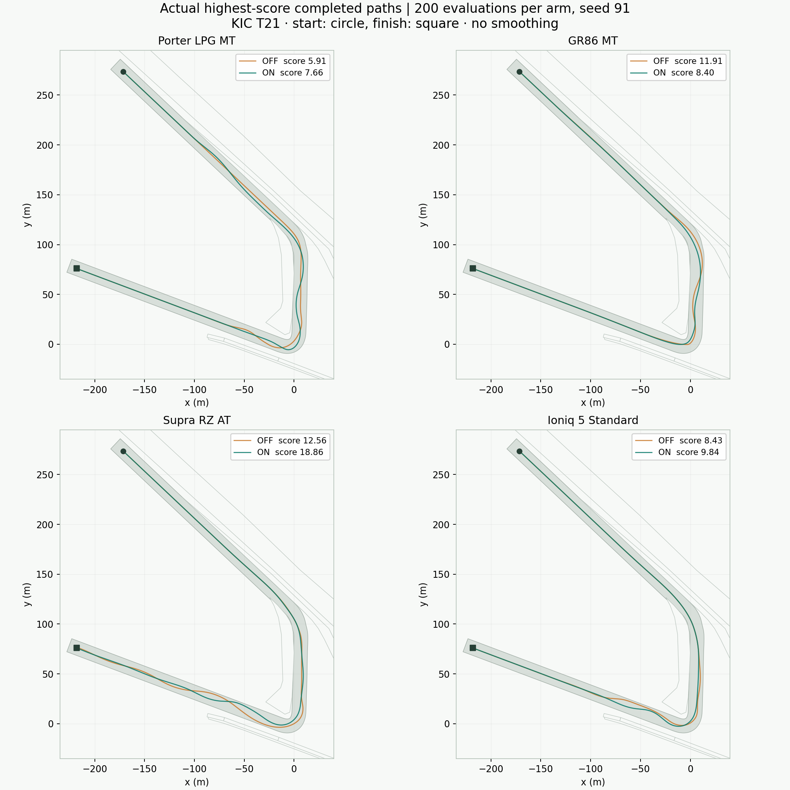

EVOLVING DRIFT · 검증 결과 · 2026-10-30 · 영암 KIC T21
라인 탐색과 클러치 킥,
구현 후 비교한 결과
초기 2,240회 실험에서 네 비교 사양 모두 바깥 방향 속도가 악화되어 탐색 배분을 한 번 수정했습니다. 같은 물리·채점·초기값으로 다시 2,240회를 평가하고, 조정에 쓰지 않은 시드91에서 1,600회를 추가했습니다.
이번 추가 3,840회에서도 코너와 직선을 모두 연결한 후보는 없었습니다. 전체 연결 성공과 수렴 속도 향상을 입증했다고 말할 수 없습니다.
6,080초기+수정 실제 평가
3,840수정 후 평가
2367수정 후 유효 완주
0수정 후 전체 연결
동일 예산과 새 시드 비교
각 행은 OFF 200회와 ON 200회의 비교입니다. 전체 라인 탐색만 켜고 껐으며, 클러치·실패 재시도·채점·시작값은 동일합니다. 두 시드의 8개 조합 중 ON의 대표 점수가 더 높은 조합은 4개입니다. 점수만으로 라인 품질이나 연결 성공을 판정하지 않습니다.
차체 방향과 실제 이동 방향
아래도 OFF → ON 순서입니다. 드리프트 거리·속도·방향 오차·바깥 속도·앞바퀴 여유는 최고 점수 대표 주행의 값입니다. 방향 오차는 샘플 지점의 도로 접선과 실제 속도 방향의 차이입니다. 바깥 속도는 진단용 대리 지표이며 이상적인 드리프트 라인이나 미관 전체를 평가하지 않습니다. 넓게 쓰는 라인과 apex 경로는 정당하게 다른 값을 가질 수 있습니다. 평가창 드리프트 거리는 코너 평가창에서 8m/s 이상, 슬립각 10~70°로 새로 전진한 노면 거리입니다. 라인이 차분해져도 드리프트 자체가 줄었다면 품질 개선으로 단정하지 않습니다. 진행률은 유효 완주 후보 전체의 최댓값이므로 같은 후보가 아닐 수 있습니다. 진행률100%만으로는 속도·apex·연결 유지 조건을 만족한 코너 완료가 아닙니다.
* 평가창 최저 속도는 재생 프레임에 기록된 값이며 드리프트가 끊긴 순간도 포함합니다. 앞바퀴 여유는 축소 샘플의 최솟값이며 전체 프레임의 안전 보증이 아닙니다. 이탈·충돌 여부는 물리 판정을 유지합니다. 속도 방향 지표는8m/s 이상 전진하며 스핀하지 않는 샘플만 사용하고, 샘플이 없으면 — 로 표시합니다.
실제 최고 기록 궤적 보기 — 시드37·91

시드37 · 회색은 시뮬레이터 주행 노면, 주황은 OFF, 청록은 ON입니다. 원본 재생 프레임의 차량 중심 위치이며 궤적을 미화하지 않았습니다.
시드91 · 이 그림만으로 슬립각이나 연결 성공을 판단할 수 없습니다.초기 구현에서 달라진 결과
시드37의 ON 200회를 같은 예산끼리 비교합니다. OFF는 초기와 수정 후 4사양×200회, 총800개 후보의 부모·유전자·점수·상태가 모두 일치했습니다. 따라서 물리나 채점 변경이 비교 결과에 섞이지 않았습니다.
초기 구현 비교 전체 · 초기 측정 JSON
큰 라인과 세부 조정이 실제로 이어졌는가
저장된 실제 궤적과 부모 이력으로 세대별 보관 부모를 재구성했습니다. 추가 물리 시뮬레이션은0회이며 최종 부모 수·라인 종류 수가 실행 결과와 일치합니다. 아래 순번은 평가된 후보 순서입니다. 부분 코너 진행·실제 드리프트 거리·진행 방향 조건을 충족한 부모가 있어야 세부 변이를 제안합니다.
포터는200회 안에 이 조건을 충족한 부모가 없어 세부 단계에 들어가지 않았습니다. GR86은138번째 후보 이후에야 시작 조건을 얻어143번째부터 세부 변이를 시도했습니다. 조용한 그립 주행만 보관하는 문제는 줄었지만, 이것만으로 연결 성공을 보장하지 않습니다.
아이오닉5의 혼합 변이 계보 확인
133번째 조상을 큰 라인·속도 변이로 바꾼160번째 후보에서 점수17.08, 코너 진행73.9%를 얻고,193번째 조향 세부 변이에서17.36으로 높아졌습니다. 중간 점수가 조금 낮아도 유효한 라인을 보관하고 다시 큰 변이를 적용한 사례입니다. 이 사례에도 완전한 코너·직선 연결은 없었습니다. 다른 차종에도 같은 이득이 난다는 증거는 아닙니다.
모든16개 사양과 수동 클러치
모든 사양에 각40회의 짧은 검사를 다시 수행했습니다. 수동4사양만 킥 유전자를 실행하며, 비수동12사양에서는 실행되지 않음을 검사했습니다. 클러치의 별도 물리 실험과 실제 모바일 재생 확인은 초기 보고서에 보관했습니다. 킥 실행은 입력 가능성을 증명하며 드리프트 연결 개선의 인과 증거는 아닙니다.
검증 범위와 재현
- 6080회는 실제 실행 횟수입니다. 고유 차량·유전자 조합은 4924개이며 동일한 후보의 재실행과 같은 시드의 상관관계를 포함합니다.
- 수정 후 전체 실험과 시드91 실험은 동일한 소스로 수행했습니다. 시드91 결과를 보고 다시 조정하지 않았습니다. ON/OFF는 같은 시드를 쓰지만 탐색 분기 이후 난수 소비가 달라 후속 변이 자체가 일대일로 같지는 않습니다.
- 모든 실행은 사전 계산된 그립 시작값을 읽었습니다. 시작 시 물리 평가·그립 탐색 호출은0회입니다.
- 단일 코스·두 시드·각200회이므로 장기 수렴이나 실차 성능을 일반화할 수 없습니다. 클러치 관성·용량은 추정치이고 동적 롤·열·마모는 포함하지 않습니다.
전체 측정·설정·소스 식별자 JSON 다운로드 · 설명과 자료
재현 명령과 소스 식별
node evolving_drift/tools/run-line-clutch-study.cjs --run --scope all --seed 37 --parallel 2 --workers 2 --prefix line-clutch-corrected
node evolving_drift/tools/run-line-clutch-study.cjs --run --scope paired --seed 91 --pair-budget 200 --parallel 2 --workers 2 --prefix line-clutch-heldout
원본 보고서의 SHA-256, 초기값 식별자, 물리·채점·유전자 서명을 JSON에 남겼습니다. 소스 raw SHA-256은 측정 체크아웃 바이트, lfSha256은 CRLF를 LF로 정규화한 값입니다. 그립 기록은 실행 전에 오프라인 생성해야 합니다.